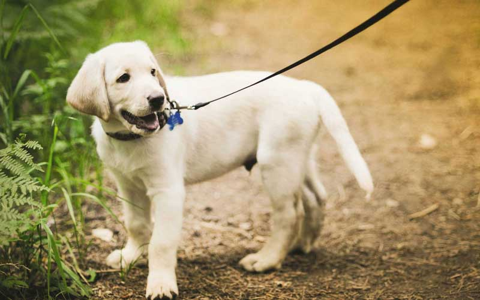

Labrador Retriever
The Labrador Retriever, also Labrador, is a type of retriever-gun dog. The Labrador is one of the most popular breeds of dog in the United Kingdom and the United States.
- Weight: 65–80 lb
- Coat: Smooth, short, dense and straight.
- Colour: Black, chocolate, or yellow.
- Litter size: 5–10 puppies.
- Life span: 12–13 years.
A favourite disability assistance breed in many countries, Labradors are frequently trained to aid the blind, those who have autism, to act as a therapy dog and perform screening and detection work for law enforcement and other official agencies. They are prized as sporting and hunting dogs.